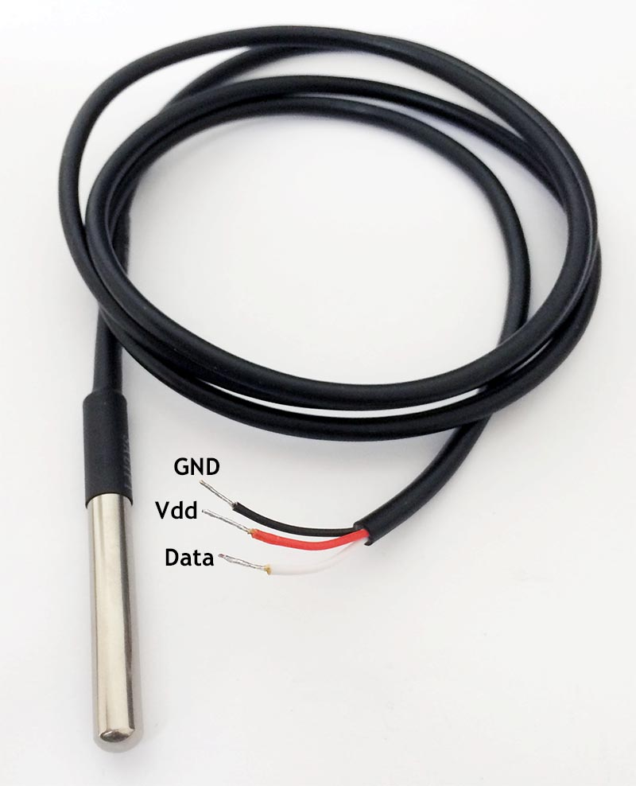

Temperatura, DS18B20
Mide la temperatura del agua en distintos puntos de la escalera y se usa para compensar la lectura del TDS.
- Conexión
- Nodo B, GPIO 4, protocolo 1-Wire
- Calibración
- Contra una PT100 de referencia: 35 puntos, R² de 0,9999 y error máximo de 0,40 °C (tolerancia de ±0,5 °C). Dentro de tolerancia.